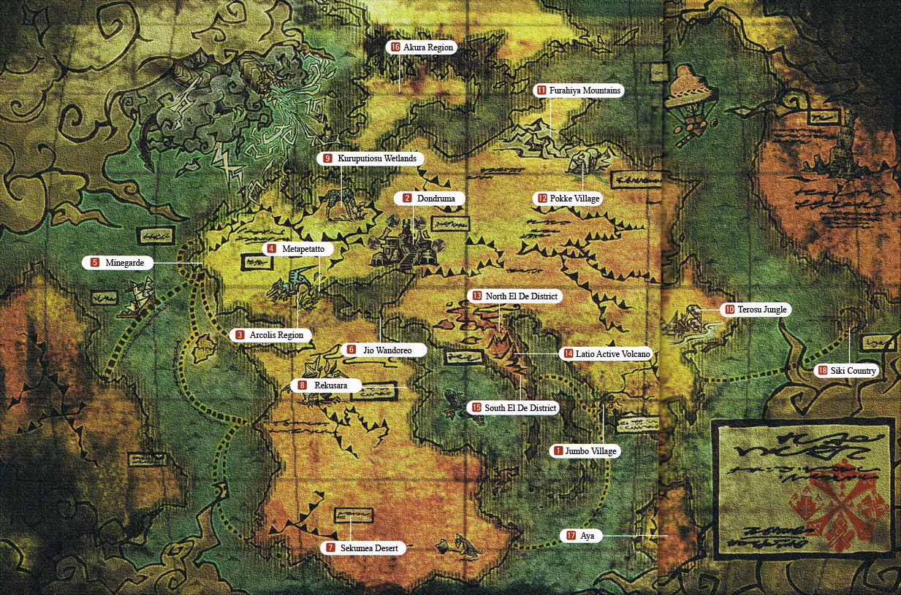
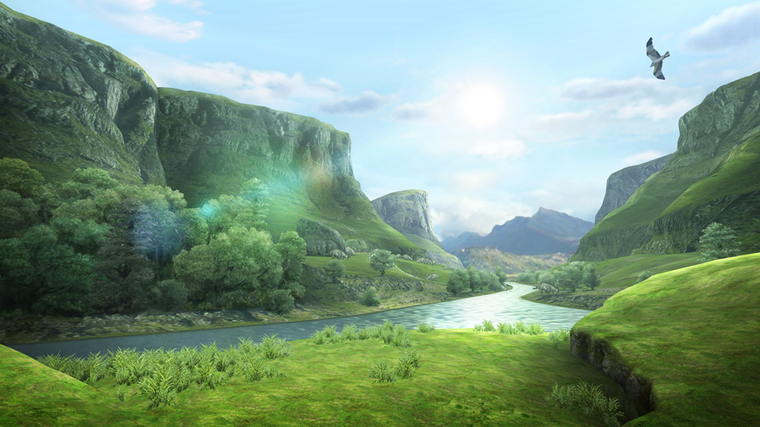
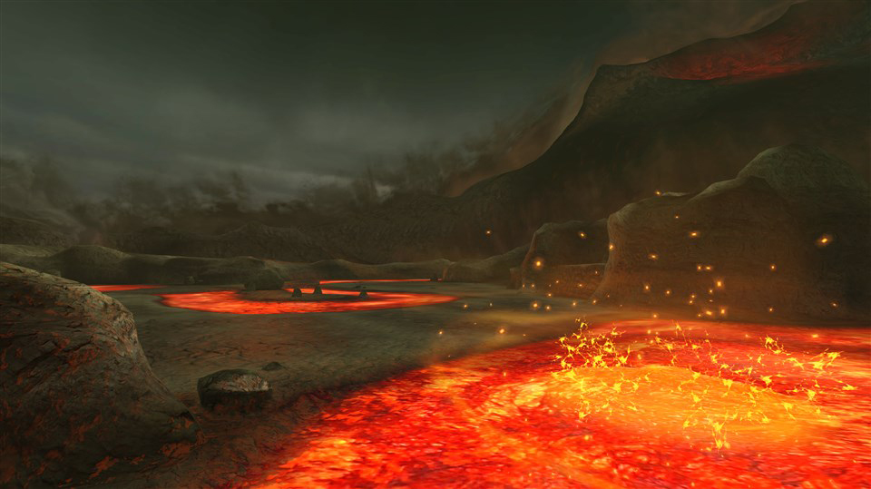
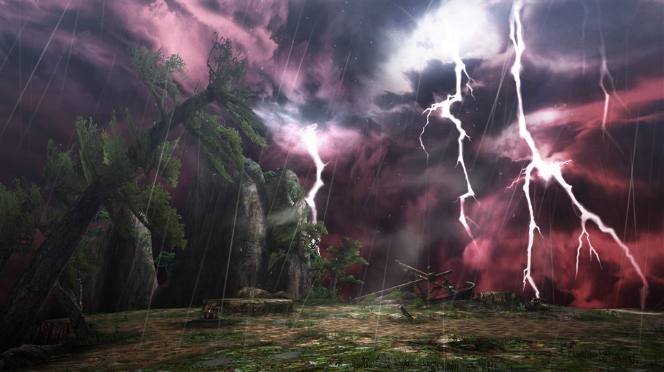
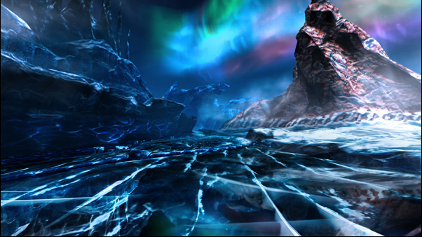
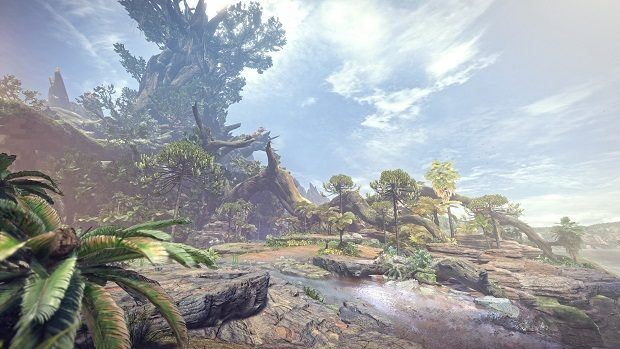
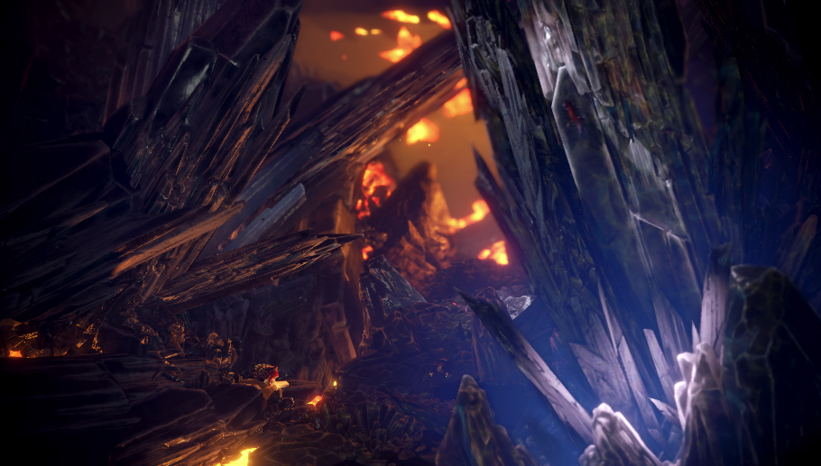
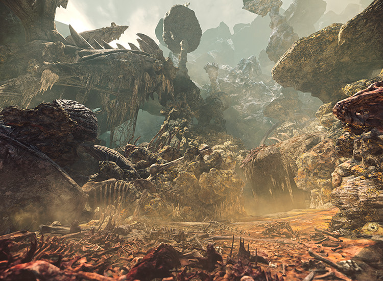

Every good hunter knows that they need to have the lay of the land before going off on a hunt. Knowing where everything is or what might be lurking around the corner could could be an importance of success and failure.
Old World
Filled with numerous locales, the Old World was where most older hunters learned the ropes. Below are just a few noteworthy spots hunters often visited(and hated).
Verdant Hills
The Verdant Hills is a remake of an older Monster Hunter map named Forest and Hills. Within Verdant Hills are deep forests and high hills, possessing an overall temperate climate that is a perfect start for newbies such as yourselves. Large monsters you should definitely be aware of are Astalos, Blue Thunder Lord Astalos, Valphalk, Chameleos, Deviljho, Gypceros, Najarala, Rathalos, Dreadking Rathalos, Silver Rathalos, Rathian, Dreadqueen Rathian, Velocidrome, Yian Kut-Ku, Yian Garuga, Deadeye Yian Garuga, and Zinogre.
Volcano
The Volcano is much larger than its Monster Hunter predecessor, the region is also far more harsh and inhospitable. Hopefully you aren't on a quest during an eruption. It is highly recommended that you tread lightly when exploring or hunting this unforgivable area. The larger monsters that you would need to be aware of are Agnaktor Valphalk, Brachydios, Basarios, Deviljho, Glavenus, Hellblade Glavenus, Gravios, Black Gravios, Iodrome, Lavasioth, Lavasioth Subspecies, Lunastra, Midogaron, Rajang, Furious Rajang, Rathalos, Azure Rathalos, Dreadking Rathalos, Shogun Ceanataur, Terra Shogun Ceanataur, Armor Shredder Shogun Ceanataur, Teostra, Uragaan, Crystalbeard Uragaan, and Volvidon.
Sacred Pinnacle
The Sacred Pinnacle is an area located high in the mountains surrounding Yukumo Village, a village within Monster Hunter XX . The sky in this area is blood red, with swirls of gray and purple. Roaring, gale-force winds can be heard at all times. Dangerous large monsters that inhabit this wild land are Amatsu, Redhelm Arzuros, Silverwind Nargacuga, Mizutsune, Heavenly Eye Mizutsune(a highly dangerous deviant version of the Mizutsune), Furious Rajang, and Zinogre.
Frozen Seaway
The Frozen Seaway is a polar area set along an Arctic coastline, where the glacial ice sheets meet the freezing sea. A massive whirlpool can be seen in the ocean not far from the coast. This area is inhabited by a wide variety of monster types, including Barioth, Brachydios, Deviljho, Gammoth, Silver Ridge Gammoth, Giadrome, Khezu, Red Khezu, Kushala Daora, Lagombi, Snowbaron Lagombi, Rajang, Seregios, Tetsucabra, Drilltusk Tetsucabra, Tidal Najarala, Tigrex, Valphalk, Zamtrios, Zinogre, Thunderlord Zinogre, and Stygian Zinogre.
New World

A new uncharted continent introduced into the latest installment of Monster Hunter, Monster Hunter World, This vast continent hosts several biomes and monsters that are both new and old alike.
Ancient Forest
The Ancient Forest is a lush and leafy setting full of monsters and resources to harvest. A vast forest that supports a complex ecosystem. A network of trees stretch high into the sky, creating the ancient tree that looms tall over the rest of the forest. Threating monsters include Anjanath, Great Jagras, Kulu-Ya-Ku, Rathalos, Pukei-Pukei, Tobi-Kadachi, Rathian, Bazelgeuse, Azure Rathalos, and Kushala Daora.
Elder Recess
This bipolar environment offers two separate biomes rolled into one. Elder Recess's top half introduces the player to a crystallized area filled with well crystals that have formed from the molten underbelly that the bottom half of this map. This area should only be visited by seasoned hunters who aren't afraid of Azure Rathalos, Bazelgeuse, Dodogama, Deviljho, Lavasioth, Uragaan, Nergigante, Teostra, and Kushala Daora.
Coral Highlands

A mysterious ecological highland that mimics the ebb and flow of the ocean itself. Eggs from the corals ride upon the rising currents and spread to the rest of the New World, where they become a part of the natural food chain. The area is a colorful and vibrant dry coral reef site, with high peaks and canyons as well as mysterious caves, the monsters you would need to be on the lookout for are Legiana, Paolumu, Deviljho, Tzitzi-Ya-Ku, Odogaron, Kirin, Pink Rathian, and Bazelgeuse.
Rotten Vale
Rotten Vale is a poisonous and hazardous area of The New World. Bones and corpses pile up, generating toxic fumes that are extremely harmful to hunters and render even docile Monsters aggressive, this entire ecosystem revolves around decomposition. Large monsters for this area are as followed: Great Girros, Odogaron, Radobaan, Deviljho, Bazelgeuse, and Vaal Hazak.